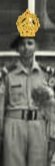
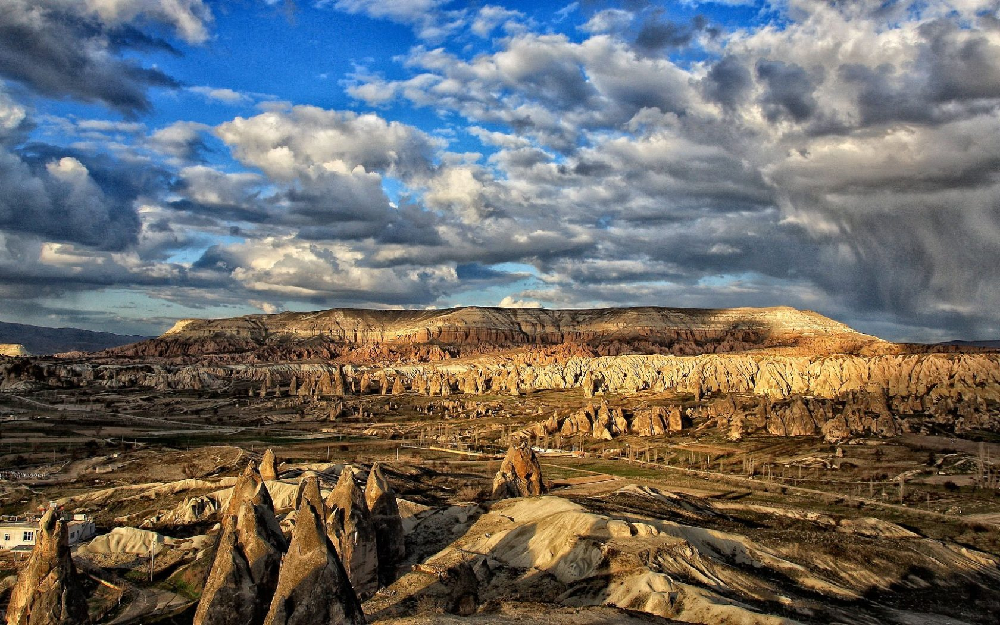

A rare picture of Maşrafi ra cenonito
Maşrafi ra cenonito was a Turkish solider.He was born in Turkey.he had two wives.he also had a friend name Jullu da hadi.Cenonito truted Jullu.
They were very good friend.A war occured known as "the draco war" in Turkey.On that war,a solider shooted Cenonito.
He was dying.But suddenly,Jullu saved him.From then,they became good friends.Jullu was the personal bodyguard of Cenonito.One day,Cen
onito found that one of his wives is pregnant.But he didn't even sleep with his wives for a long period of time because of business.Then where did the baby come from?Whose baby is this?Then the great cenonito ordered his soliders to present his wife in front of him.
The soliders presented his wife.Cenonito asked his wife about the baby.His wife said,"The father of this baby is my one and only love Jullu.I cannot live without him.
I love him more than my life.I just want to leave you and also this kingdom.Please leave me alone".The great Cenonito became angry.He ordered his soliders to find out Jullu and present him in front of him.
The soliders went to find Jullu but they could not find him.Then Cenonito killed his wife by cutting her head.
On the other side,Jullu is also a king.He has his own palace.On a war,Cenonito's father killed Jullu's father.To take the revange,Jullu did all those things.
He shooted Cenonito and also saved him so that Cenonito make him friend.Then he did physical relation with his wife whom he loved most.Then he get back to his kingdom.
Knowing that,The great Cenonito went to Jullu's kingdom with his soliders to defeat Jullu.He defeated Jullu and killed him.He also took Jullu's wife with him and made her the maid of his palace.
He used to abuse her sexually.One day,she died,A doctor came for postmortem.He found that her DNA matches with Cenonito.Knowing that,Cenonito became shocked.
He said to the doctor,"I've lost my father and mother at 5.I dont have any reative.I had a daughter whome i lost in a war."
Then the doctor said that,"It's your daughter's DNA."Cenonito realised that he was involved in physical relation with his own daughter.
Actually Jullu kidnapped his daughter on that war.Then he married her.By realising that,Cenonito killed everyone present in the kingdom and at last he killed himself.
This is main the story of the great Maşrafi ra cenonito.He was a very good king.Jullu a hadi was a bad king.He used to torture innocent people.
Maşrafi ra cenonito is the backbone of the history.Without him,the history is nothing.

Battleground of "the draco war"
Jullu Da Hadi